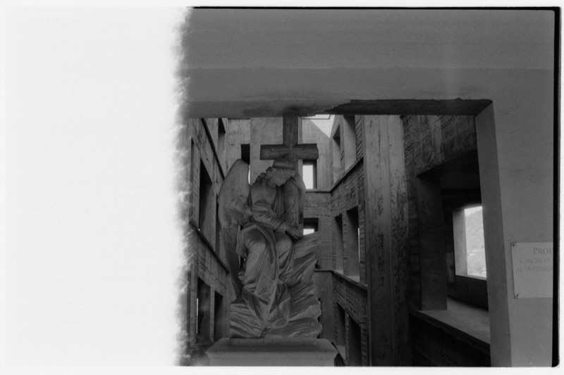
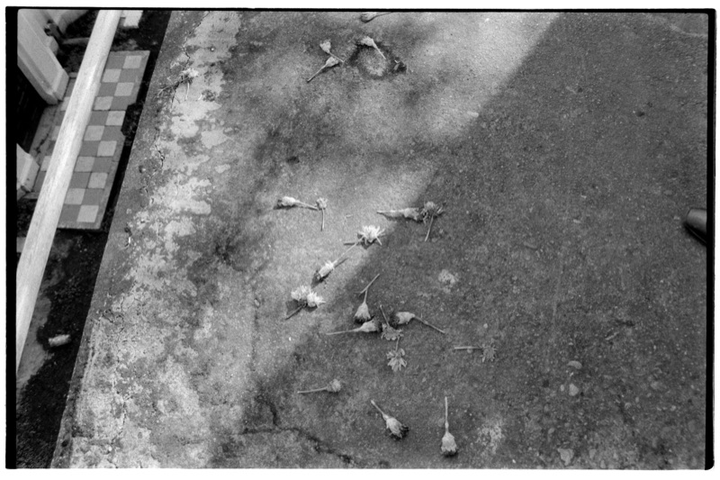
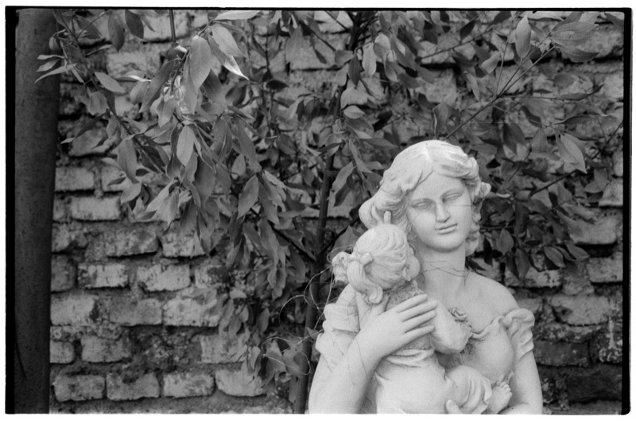
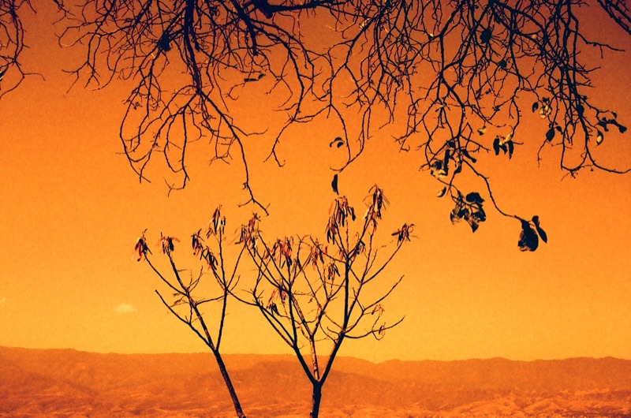
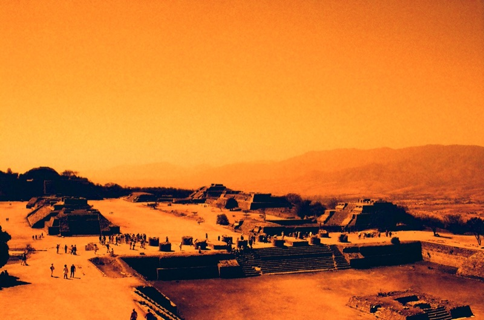
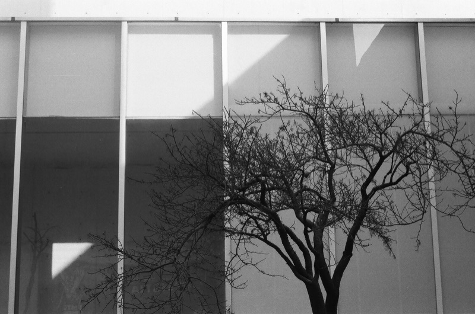
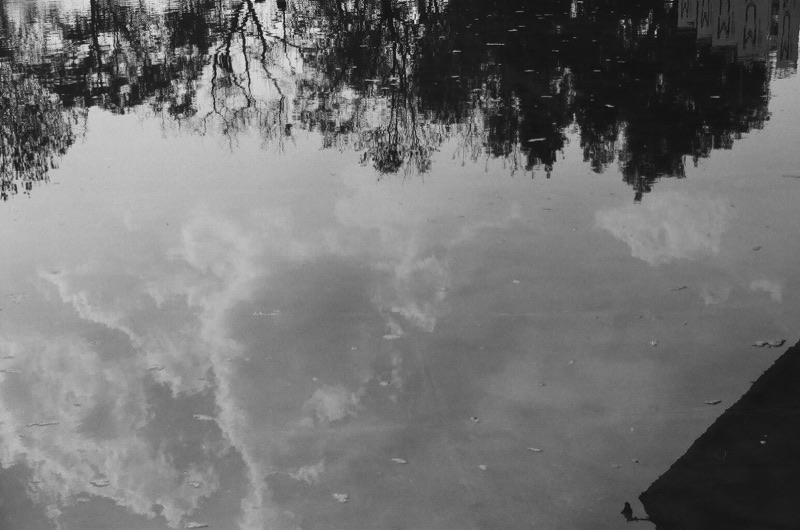
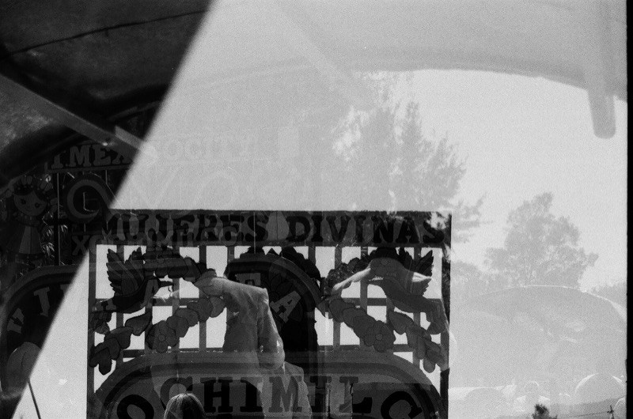

Mis fotos
Una selección de fotografías en película, ordenadas por rollo.
2026
Minolta SR-T 101 · Kentmere Pan 400 · 2026






Canon EOS 3000 · Harman Red 125 · Febrero 2026





Canon EOS 3000 · Kentmere Pan 100 · Febrero 2026






2025
Canon EOS 3000 · Harman Phoenix II 200 (forzada a 125) · 2025


Canon EOS 3000 · Ilford 400 (forzada a 500) · Revelado JPF Estudio · Julio 2025